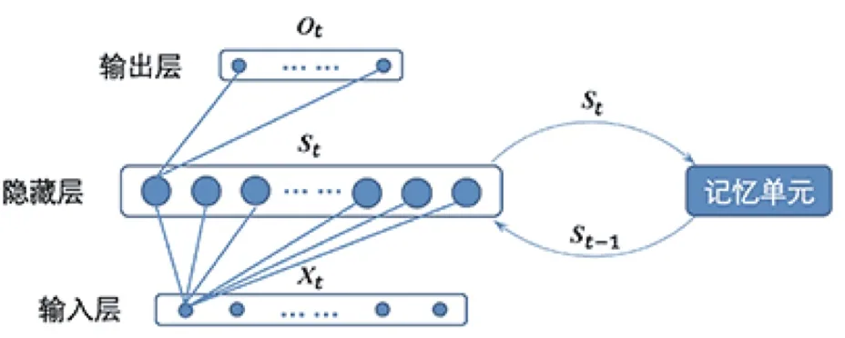
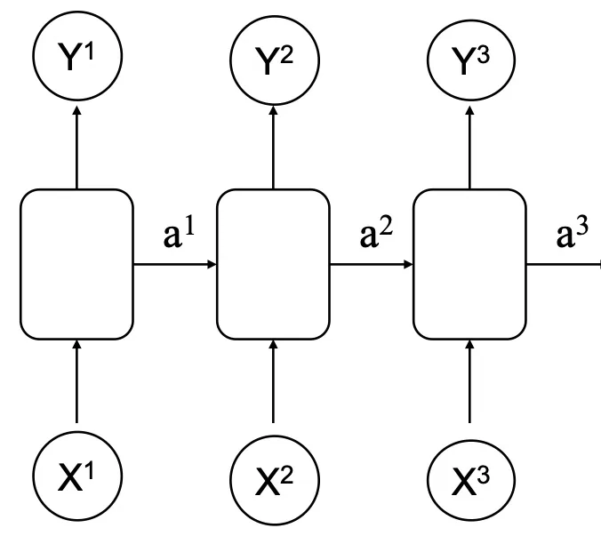
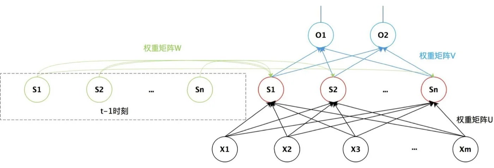
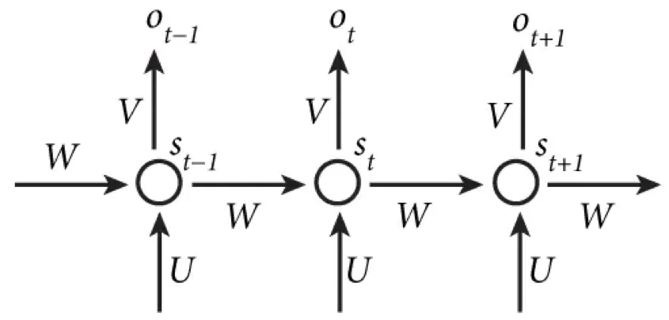

计算机视觉 · 第 7 章 循环神经网络
7.2 循环神经网络的基本结构
上一节把问题提了出来：序列任务要求网络记住前面看过的内容。这一节就来看循环神经网络（Recurrent Neural Network，RNN）是怎么做到这一点的：它在普通全连接网络上只多了一个「记忆单元」，却由此改变了整个计算方式。我们会依次看清它的结构、它的两组计算公式、三个权重矩阵的含义，最后从「动力系统」的角度理解它为什么有很强的拟合能力。
1. 只比全连接网络多一个记忆单元
RNN 的基本结构并不复杂。课件的说法是：与一般的全连接神经网络比较，循环神经网络只是多了一个记忆单元，而这个记忆单元就是循环神经网络的关键所在。

这个「记忆单元」的作用，就是把上一时刻隐藏层的值保存下来，交给当前时刻一起参与计算。于是同一个隐藏层在不同时刻之间被串了起来，网络对当前输入的理解里就带上了此前积累的信息。
2. 从简化版前馈网络到简单 RNN
课件先用一个简化版的前馈网络做对照：输入层是 X1、X2、X3，隐藏层是 a1、a2、a3，输出层是 Y1、Y2、Y3。信息只在「输入 → 隐藏 → 输出」这个方向上流动：每个输入只影响自己上方那一条通路，隐藏层各节点之间没有往来。

简单 RNN 就在这个骨架上加了一条「横向」的连线：把上一时刻隐藏层的值 ai−1 也送进当前时刻的隐藏层。课件的描述是：循环神经网络的隐藏层的值 s 不仅仅取决于当前这次的输入 x，还取决于上一次隐藏层的值 s；而权重矩阵 w 就是隐藏层上一次的值作为这一次的输入的权重。这条从上一时刻指回当前时刻的连线，就是「循环」二字的来源。
3. 三个权重矩阵与两组公式
把上面这张示意图写成向量形式，就是 RNN 的标准画法：输入层是一个向量 X = [x1, x2, …, xm]，隐藏层（循环层）是一个向量 S = [s1, s2, …, sn]，输出层是 O1、O2…。连接这三层的是三个权重矩阵。

三个矩阵的分工是：U 把当前输入 Xt 映射到隐藏层，W 把上一时刻的隐状态 St−1 映射到隐藏层，V 把当前隐状态 St 映射到输出层。于是 t 时刻的计算可以写成两组公式：
- 隐状态：St = f(U · Xt + W · St−1 + b2)；
- 输出：Ot = g(V · St + b1)。
其中 f 和 g 是非线性激活函数，b1、b2 是偏置。第一式是整套结构的关键：St 不仅仅取决于 Xt，还取决于 St−1——当前时刻的状态是「当前输入」与「历史状态」共同作用的结果，这正是记忆发挥作用的地方。第二式则说明输出只由当前状态决定，输出本身不再往回反馈。
再看时间维度。课件把同一个网络按照时间线展开，并把这句话标在旁边：在时间维度上权值共享。意思是 U、W、V 这三个矩阵在所有时刻都是同一组参数，第 1 个时刻和第 100 个时刻用的是同一套权重。这与卷积神经网络在空间上共享卷积核是同一个思路，好处也一样：参数量不随序列长度增长，而且同一种模式无论出现在序列的哪个位置，都能被同一组权重识别出来。

4. 隐状态与动力系统
课件接着给了 St 一个更数学的说法：从数学上，上面那组公式可以看成是一个动力系统。动力系统是数学上的概念，指系统状态按照一定规律随时间变换的系统；具体地讲，动力系统是使用一个函数来描述一个给定空间中所有点随时间的变化情况。
在这个视角下，St 就是系统在 t 时刻的状态，而 St = f(U · Xt + W · St−1 + b2) 就是状态随时间演化的规律：下一步的状态由当前输入和上一步状态共同决定。也正因为如此，隐藏层的活性值 st 在很多文献上也称为状态（State）或者隐状态（Hidden State）。至于「隐」字，说的是它不像输出那样可以直接观测到：我们在数据里只看得到输入和输出，状态是网络内部自己维持的一份「底账」。
5. 拟合能力：循环神经网络通用近似定理
既然是动力系统，那么一个自然的追问是：这样的网络能表示多复杂的规律？课件给出了定理 6.1（循环神经网络通用近似定理，Haykin，2009）：如果一个完全连接的循环神经网络有足够数量的 sigmoid 型隐藏神经元，它可以以任意的准确率去近似任何一个非线性动力系统：
- St = g(St−1, X)， （6.10）
- Y = o(St)， （6.11）
其中 St 为每个时刻的隐状态，X 是外部输入，g(·) 是可测的状态转换函数，o(·) 是连续输出函数，并且对状态空间的紧致性没有限制。换句话说，循环神经网络的拟合能力也非常强大，理论上可以近似任意的非线性动力系统。
这个定理的地位与第 5 章前馈网络的通用近似定理相当：它保证「只要有足够的隐藏神经元，就没有表达不出来的动力系统」。但要留意，定理讲的是表达能力，而不是「一定学得出来」——参数能不能训到那个解，是后面 7.4、7.5 两节要处理的问题。
本节小结
- 循环神经网络与普通全连接网络的差别只有一个记忆单元：把上一时刻隐藏层的值保存下来，参与当前时刻的计算。
- 两组核心公式：隐状态 St = f(U · Xt + W · St−1 + b2)，输出 Ot = g(V · St + b1)；St 既取决于当前输入 Xt，也取决于上一时刻的隐状态 St−1。
- 三个权重矩阵分工明确：U 连接输入与隐藏层，W 连接相邻时刻的隐藏层，V 连接隐藏层与输出层；它们在时间维度上共享，参数量不随序列长度增长。
- 按时间线展开后，RNN 就是一个「每层权值共享」的深层前馈网络——这个视角是下一节讨论 BPTT 的基础。
- 从数学上看 RNN 是一个非线性动力系统，St 因此被称作状态或隐状态；通用近似定理（Haykin，2009）说明它有足够数量的 sigmoid 型隐藏神经元时可以任意精度地近似任何非线性动力系统。